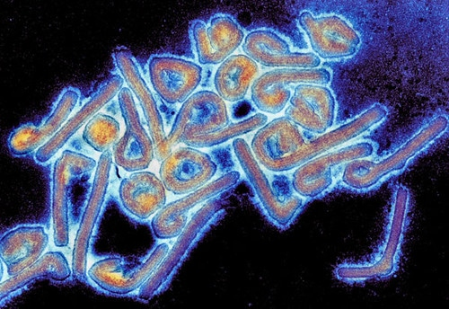
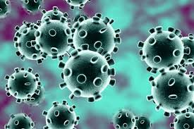
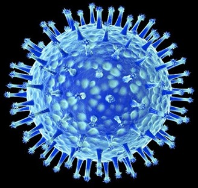
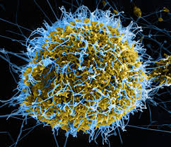
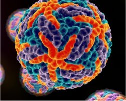

Afinal:
No seu processo de reprodução, os vírus contam com dois tipos de ciclos: o ciclo lisogênico e o ciclo lítico. No ciclo lítico, o vírus insere o seu material genético no da célula hospedeira e, diferentemente do ciclo lisogênico, passa a dominar o metabolismo da célula, destruindo-a no final do processo.
O ciclo lítico apresenta diversas fases:
A absorção é a fase em que ocorre o reconhecimento e a fixação do vírus à célula. Vírus são muitos específicos em relação à suas células hospedeiras. O hospedeiro é dotado de substâncias químicas capazes de permitir que o vírus detecte-o e se prenda à membrana.
Na penetração ocorre a inserção do genoma viral no interior da célula hospedeira. Esse processo pode ocorrer de três formas diferentes:
Direta – apenas o material genético do vírus é injetado na célula, permanecendo sua parte proteica no lado externo.
Fusão do envelope viral – o envelope viral é fundido à membrana celular, o capsídeo se desfaz e o genoma do parasita invade a célula.
Endocitose – os receptores químicos da membrana celular promovem a fixação do vírus, e depois o parasita é englobado pelas invaginações da mesma.
A síntese é o estágio do ciclo em que o vírus começa a determinar as atividades metabólicas da célula. Nesse processo, as enzimas que antes eram utilizadas na síntese proteica e de ácidos nucleicos da célula hospedeira, passam a ser empregadas na produção de partículas virais, como o material genético e as proteínas.
Na montagem, os componentes dos vírus que foram produzidas anteriormente são organizados a fim de constituir novos parasitas.
A etapa final do processo chama-se liberação. Nessa fase os vírus formados na fase de montagem produzem uma enzima viral denominada lisozima, que causa a ruptura da célula hospedeira, processo conhecido como lise celular. Além disso, como a célula passou a sintetizar estruturas virais, a produção dos seus próprios componentes se torna impossível esgotamento celular, o que favorece o seu rompimento. Com a destruição da célula, os vírus se libertam e infectam as células vizinhas, recomeçando o seu ciclo.
Exemplos de vírus líticos são: Poliovírus, Ebola, Rinovírus, Adenovírus, Rotavírus e o Vírus influenza.
| Nome: | taxa de infecção: | taxa de mortalidade |
|---|---|---|
| Marburg | Baixo | 90% |
| Ncov-19 | Muito-Alto | 2% ~ 4% |
| H5N1 | Baixo | 50% |
| Junin | Baixo | 20% ~ 30% |
| dengue | Auto | 10% |
O vírus de Marburg ou vírus de Marburgo (MARV) é o agente causador da febre hemorrágica de Marburg, que teve epidemias conhecidas em 1967 (a primeira), e depois em 1975, 1980, 1987, 1998, 2004 - 2005 (cujo epicentro foi Angola) e 2007-2014 (cujo epicentro foi Uganda).
Tanto a doença quanto o vírus estão relacionados com o ébola e têm origem na mesma área geográfica (Uganda e Quénia ocidental). A sua fonte é uma zoonose de origem desconhecida.
COVID-19 (do inglês Coronavirus Disease 2019) é uma doença infeciosa causada pelo coronavírus da síndrome respiratória aguda grave 2 (SARS-CoV-2). Os sintomas mais comuns são febre, tosse seca e cansaço. Entre outros sintomas menos comuns estão dores musculares, dor de garganta, dor de cabeça, congestão nasal, conjuntivite, perda do olfato e do paladar e erupções cutâneas.
O Influenza A subtipo H5N1, também conhecido como "gripe das aves", A(H5N1) ou simplesmente H5N1, é um subtipo de vírus Influenza A que pode causar doença em humanos e muitas outras espécies animais.[1] Uma estirpe de H5N1 adaptada a aves, chamada HPAI A(H5N1) (significando "Highly Pathogenic Avian Influenza virus of type A of subtype H5N1" em português "vírus de gripe das aves altamente patogénico do tipo A subtipo H5N1"), é o agente causador da gripe H5N1, vulgarmente conhecida como "gripe das aves".
Hemorrágica Argentina é uma doença viral grave causada pelo vírus Junin transmitido pelo rato do milho (Calomys musculinus), endêmico das zonas rurais das províncias de Buenos Aires, Santa Fé, Córdoba y La Pampa.É uma febre hemorrágica viral similar, porém muito mais frequente, que a Febre hemorrágica brasileira e a Febre hemorrágica boliviana.
Dengue é uma doença tropical infecciosa causada pelo vírus da dengue, um arbovírus da família Flaviviridae, gênero Flavivírus e que inclui quatro tipos imunológicos: DEN-1, DEN-2, DEN-3 e DEN-4.[1] Os sintomas incluem febre, dor de cabeça, dores musculares e articulares e uma erupção cutânea característica que é semelhante à causada pelo sarampo. Em uma pequena proporção de casos, a doença pode evoluir para a dengue hemorrágica com risco de morte, resultando em sangramento, baixos níveis de plaquetas sanguíneas, extravasamento de plasma no sangue ou até diminuição da pressão arterial a níveis perigosamente baixos.